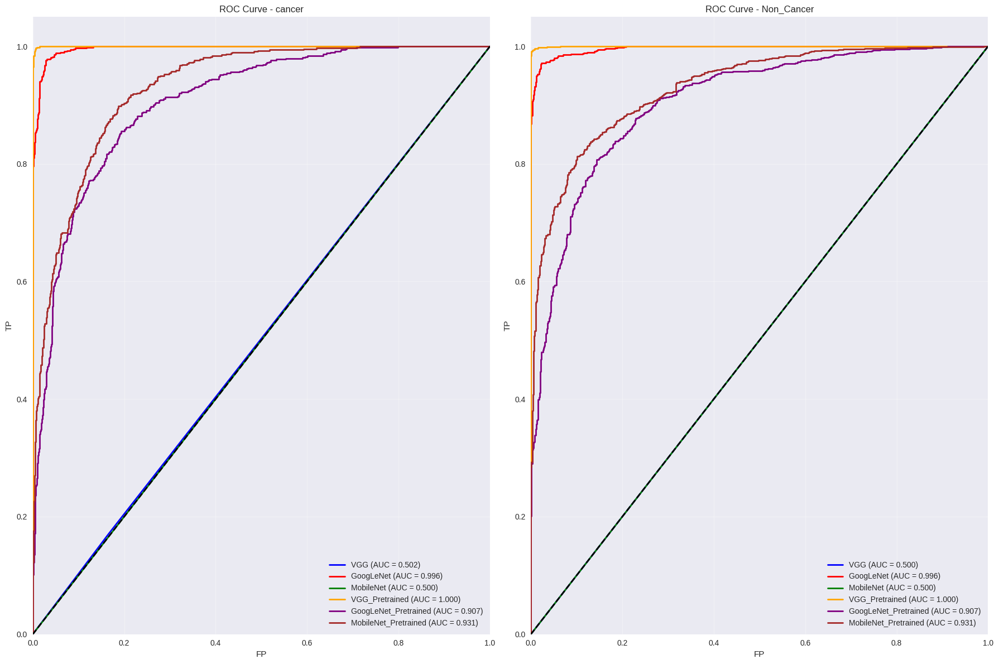
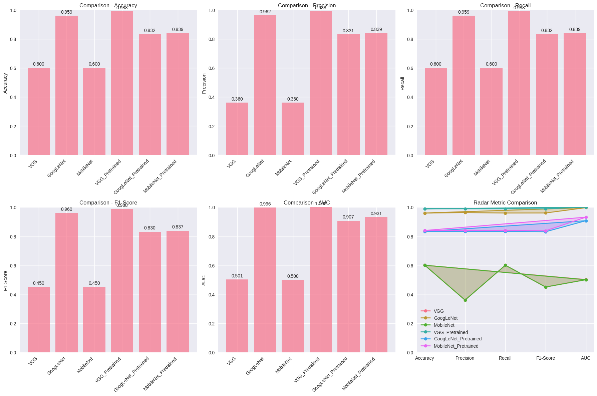
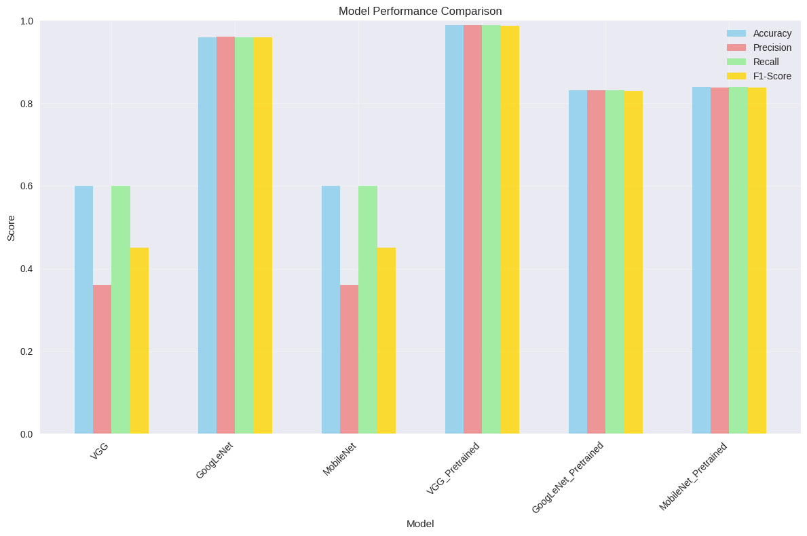

Computer Vision · Imagerie Médicale
Apprendre à un réseau à repérer un cancer sur un scanner
Trois architectures de CNN codées à la main : VGG19, GoogLeNet et MobileNet. Entraînées from scratch puis par transfert, pour classer des scanners abdominaux comme cancéreux ou non.
- PyTorch
- CNN
- Imagerie médicale
- Transfer Learning
Le contexte
Le problème à résoudre
Repérer un cancer du côlon sur un scanner abdominal demande à un radiologue un œil entraîné et du temps, une ressource rare quand les examens s'accumulent. L'idée de ce projet était de voir jusqu'où un réseau de neurones convolutif peut aller sur cette tâche de classification binaire : un scanner donné montre-t-il un cancer, ou non ?
Plutôt que de partir directement d'une bibliothèque toute faite, j'ai voulu comprendre en profondeur le fonctionnement de trois architectures de CNN devenues des classiques : VGG19, GoogLeNet et MobileNet. En les réimplémentant moi-même en PyTorch, couche par couche, avant de les comparer à leurs versions pré-entraînées sur ImageNet.
L'approche
Comment j'ai construit la solution
Le jeu de données (ColonCancerCT-2025) contient environ 7 900 images d'entraînement et 1 700 images de test, réparties en deux classes : cancer et non-cancer. J'ai écrit une classe Dataset PyTorch sur mesure qui valide chaque image à l'ouverture et écarte les fichiers corrompus, puis un pipeline de prétraitement qui force la conversion en RGB (les scanners n'ont pas tous le même nombre de canaux), redimensionne les images en 224×224, applique un flip horizontal aléatoire et normalise les pixels.
J'ai ensuite recodé trois architectures à la main : VGG19 (un empilement profond de petites convolutions 3×3), GoogLeNet avec ses modules Inception à branches parallèles et ses deux classifieurs auxiliaires, et MobileNet avec ses convolutions séparables en profondeur conçues pour être légères. Chacune a été entraînée dix epochs avec AdamW, un scheduler qui réduit le taux d'apprentissage en cas de stagnation, et un clipping de gradient. J'ai répété l'expérience une seconde fois en partant cette fois de poids pré-entraînés sur ImageNet, backbone gelé, pour ne réentraîner que la tête de classification (histoire de comparer l'apprentissage from scratch et le transfert sur un jeu de données bien plus petit et bien plus spécialisé que ImageNet).
Résultat inattendu : VGG19 et MobileNet entraînés from scratch n'ont jamais décollé. Ils sont restés bloqués à prédire systématiquement la classe majoritaire (≈60% d'exactitude, AUC ≈0,50, autrement dit pas mieux que le hasard). GoogLeNet, lui, a parfaitement convergé from scratch (96% d'exactitude), sans doute grâce à ses classifieurs auxiliaires qui injectent un signal de gradient au milieu du réseau et évitent le blocage que les deux autres architectures ont subi.



Résultats
Ce que le modèle donne en pratique
Le modèle le plus performant est le VGG19 pré-entraîné, avec 98,8% d'exactitude et une AUC de 0,9998. Le GoogLeNet entraîné from scratch tient étonnamment bien la comparaison (96%, AUC 0,996), pendant que sa version pré-entraînée fait moins bien (83%). Un signe que geler des poids appris sur des photos ImageNet ne s'adapte pas forcément aussi bien à la texture particulière d'un scanner médical, selon l'architecture. MobileNet, lui, n'a fonctionné correctement qu'une fois pré-entraîné (84%), restant bloqué comme VGG19 quand il partait de zéro.
Ce que j'ai retenu
Le vrai apprentissage
Le transfert de poids pré-entraînés n'est pas une solution magique universelle : son efficacité dépend autant de l'architecture que de la tâche elle-même. J'ai aussi découvert de façon très concrète pourquoi les classifieurs auxiliaires de GoogLeNet existent (sans eux, VGG19 et MobileNet sont restés piégés par un problème de gradient qui s'évanouit dans les couches profondes, et rien dans la courbe de perte ne le laissait deviner avant d'avoir comparé les architectures entre elles).